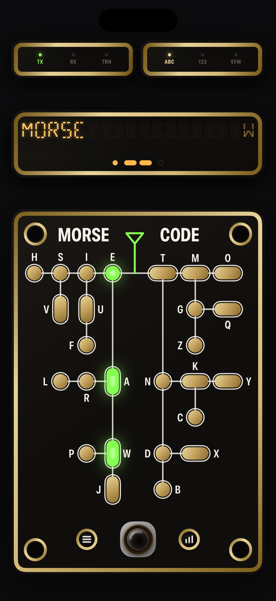
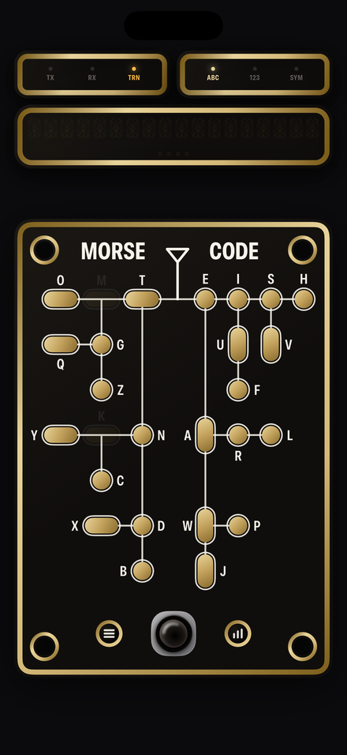
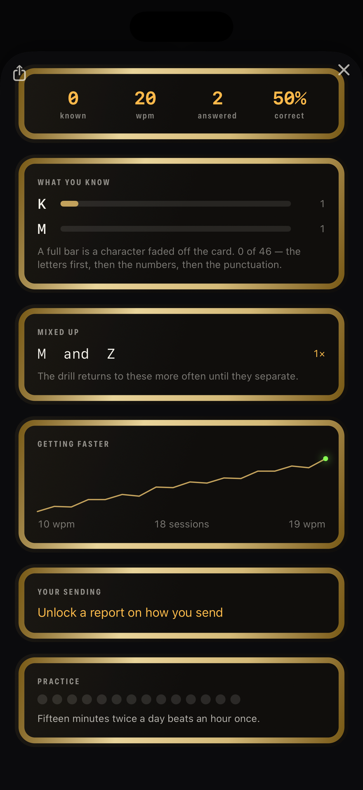

Para iPhone e iPad
Aprenda morse e depois solte
O MorseHero é um treinador de morse construído em torno de um cartão decodificador: a árvore do morse em ilhas douradas sobre uma placa escura, com uma lâmpada em cada ilha e um único manipulador telegráfico preto.



O cartão ensina o código
O morse é uma árvore, e ler uma letra é percorrê-la — à esquerda num traço, à direita num ponto. O cartão é essa árvore em ilhas douradas sobre uma placa escura, com uma lâmpada em cada uma. Manipule ponto traço ponto e acendem E, depois A, depois R: você vê o código se estreitar até uma resposta em vez de recebê-la pronta.
Uma rota, não uma consulta
Cada lâmpada do caminho fica acesa, então a letra chega junto com o motivo de ser aquela.
Um manipulador preto
A duração do toque é o sinal inteiro, por isso ela é cronometrada pelo relógio do hardware e não por um reconhecedor de gestos.
Três cartões
As letras como árvore. Números e pontuação como tabelas, uma linha cada, porque os códigos deles carregam um padrão que uma árvore esconde.
E então ele se retira sozinho
Aprender morse por uma tabela de pontos e traços é o erro que trava a maioria das pessoas por volta de doze palavras por minuto. Por isso, assim que você reconhece um caractere, a ilha dele apaga da placa — na recepção, nunca enquanto você manipula. A placa escurece onde você já aprendeu, e o cartão vazio é o seu progresso. Erre um caractere por um tempo e ele volta.
O grátis é o cartão, os dois sentidos e os oito primeiros caracteres — longe o bastante para vê-los apagar. Uma única compra libera o resto. Ela não se renova.
Três maneiras de praticar
Manipule você mesmo
Transmita no manipulador preto e veja a rota acender da antena para baixo.
Aponte para um rádio
O app decodifica o que ouve pelo microfone, deduzindo sozinho a velocidade de quem transmite.
Responda ao app
Caracteres isolados você devolve. Palavras, indicativos e um contato inteiro você digita: devolver uma frase limitaria você à sua própria velocidade.
Ele ouve o que você não consegue
O manipulador é cronometrado pelo relógio do hardware, então o app enxerga se seus traços realmente duram três vezes seus pontos, se o espaçamento se mantém e se você desliza conforme cansa. Ele aponta uma coisa para corrigir, como faria um operador experiente sentado ao seu lado.
Nada sai do telefone
Sem conta. Sem analytics. Sem rede. O app não faz nenhuma requisição própria — o único servidor com que ele fala é o da Apple, e só ao comprar ou restaurar. O microfone é analisado em busca de um tom e descartado, nunca gravado. A política de privacidade diz exatamente o que fica onde.
O app fala onze idiomas: inglês, alemão, francês, espanhol, italiano, português do Brasil, japonês, coreano, grego, ucraniano e russo.
MorseHero
Grátis para experimentar, liberado com uma compra. iPhone e iPad, onze idiomas, nada é enviado.